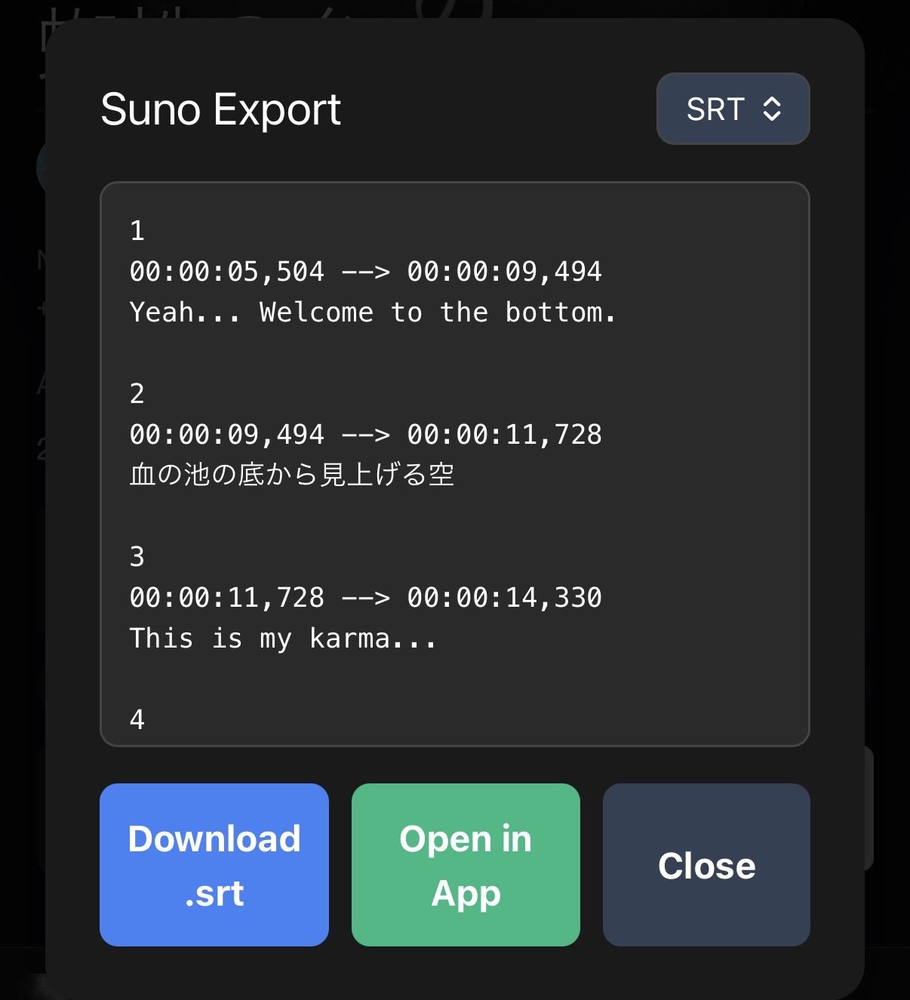

新感覚DJエフェクトプレイヤー。
Sunoの楽曲ページでブックマークレットを起動し、楽曲をリアルタイムにアレンジしよう！
1 ブックマークレットの登録
- Safariを開き、任意のページをブックマークに登録します。
※画面下の「共有アイコン（四角から上矢印）」から「ブックマークを追加」 - ブックマーク一覧を開き、右下の「編集」をタップして先ほど保存したブックマークを選択します。
- 名前を「AMU BEAT起動」など分かりやすいものに変更し、URLの欄に元々入っている文字をすべて削除して、以下のコードをコピーして貼り付けて保存してください。
- Chromeを開き、任意のページをブックマークに登録します。
※右上の「︙（メニュー）」から「☆」をタップ - メニューの「ブックマーク」を開き、先ほど保存したブックマークの右横にある「︙」から「編集」をタップします。
- 名前を「AMU BEAT起動」など分かりやすいものに変更し、URLの欄に元々入っている文字をすべて削除して、以下のコードをコピーして貼り付けて保存してください。
2 使い方
- SafariでSunoの楽曲ページを開きます。
- アドレスバー（検索窓）をタップして「AMU BEAT」と入力し、検索結果の下に表示されるブックマーク「AMU BEAT起動」をタップして実行します。
※または、普通にブックマーク一覧を開いてタップしてもOKです。 - 下図のようなメニューが表示されますので、真ん中にある緑色の「Open in App」ボタンをタップしてください。

- するとAMU BEATが自動的に起動します。
- 再生ボタンを押すだけで、すぐにDJプレイが楽しめます！
- ChromeでSunoの楽曲ページを開きます。
- アドレスバー（検索窓）をタップして「AMU BEAT」と入力し、検索結果の下に表示されるブックマーク「AMU BEAT起動」をタップして実行します。
- 下図のようなメニューが表示されますので、真ん中にある緑色の「Open in App」ボタンをタップしてください。
- するとAMU BEATが自動的に起動します。
- 再生ボタンを押すだけで、すぐにDJプレイが楽しめます！